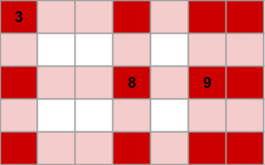

To formalize the reasoning about this problem and yield both an algorithm and a proof of its correctness we will resort to some graph theory. Consider an undirected graph G where the set of R × C + 1 nodes is the set of cells in the painting plus an additional special node we call root. We add an edge between each pair of adjacent cells with length D and for each cell that has a fixed brightness value v we add an edge from the root to the cell node with length v.
Let p(c) be the length of the shortest path on G from the root to the node that represents cell c.
Property 1. The p(c) is an upper bound on the value that can be assigned to c. Let
root, a1, a2, ..., ak=c
be the path of k edges
from the root to c of total length p(c). By construction of G, a1 is a fixed cell.
Let v be a1's value. Also by construction, the edge (root, a1) has length v
and all other edges (ai, ai+1) have length D.
Thus, p(ai) = v + (i - 1) × D. Clearly p(a1) = v is an
upper bound on its value v, and by induction, if p(ai) is an upper bound on the
values that can be assigned to ai, p(ai+1) = p(ai) + D is
an upper bound on the values that can be assigned to ai+1 because it can't differ by more
than D with the value assigned to ai because the corresponding cells are adjacent
(any edge from G not involving the root connects nodes representing adjacent cells).
Property 2. Let c be a fixed cell with value v. If p(c) ≠ v, then the case is impossible. Since there is an edge (root, c) with length v, p(c) ≤ v. And, if p(c) < v, the case is impossible by Property 1.
Property 3. If p(c) is exactly the value assigned to c for all fixed cells c, then the case is possible and assigning p(c) to each non-fixed cell c is a valid assignment of maximum sum. By the precondition we know that p assigns all fixed-cells their original value, so we only need to check if neighboring cells are assigned values that differ by no more than D. Let c and d be two neighboring cells. Since G contains an edge (c, d) with length D it follows by definition of shortest path that p(c) ≤ p(d) + D and p(d) ≤ p(c) + D. Since p is a valid assignment, and by property 1, it assigns all cells a maximum value, it follows immediately that p is a valid assignment of maximum sum.
This yields an algorithm to solve the Small dataset: calculate the shortest path from the root to all other cells using Dijkstra's algorithm and then use Property 2 to check for impossible cases. If the case is possible, the answer is just the sum of p(c) over all cell nodes c. Dijkstra's algorithm takes O(R × C × log (R × C)) time while both checking for Property 2 and summing take O(R × C) time. Therefore, the overall algorithm takes O(R × C × log R × C) time, that fits comfortably within the Small limits.
Another similar approach that sidesteps the graph theoretical considerations is noticing that by transitivity, a cell at S orthogonal steps of a fixed-cell with value v cannot be assigned a value greater than v + S × D. That means that if two fixed cells are at S orthogonal steps and their value differs by more than S × D the case is impossible. Otherwise, it can be shown that it's possible and a valid assignment of maximum sum results from assigning each cell the minimum of v + S × D over all values for v and S for each fixed cell (which is, of course, the exact same assignment as p() above). Checking all pairs of fixed-cells takes O(N2) time and finding the assignment takes O(R × C × N) time, which means this yields an algorithm that takes O(R × C × N) time overall and it also passes the Small. The claims above can be proven directly, but the graph notation makes it easier, and the claims in both cases are essentially the same. Additionally, the graph theoretical approach directly yields a more efficient Small-only solution.
The size of the grid in the Large dataset is too big to inspect the cells one by one, so we need a different approach. The foundations built while solving the Small dataset, however, are still tremendously useful. We define the same G and function p as before.
Property 4. For every cell c there is a shortest path in G from the root to c of length k:
root, a1, a2, ..., ak=c
where a1 is a fixed cell and there is some i
such that each edge (aj, aj+1) come from a horiztonal adjacency if and only
if j < i. In plain English, there is path that goes from the root to a fixed cell a1,
then moves horizontally zero or more times, and then moves vertically zero or more times.
We can prove this easily by noticing that if the last k-1 steps include h horizontal and k-1-h
vertical steps of any shortest path, a path that does h horiztonal steps first
and k-1-h vertical steps last will reach the same destination (through different intermediate
cells), and since the length of the edges of all horizontal and vertical is the same (D),
the resulting path is also a shortest path.
Let us call our original R × C matrix M. We can use a technique called coordinate compression to consider only the interesting part. We call a row or column interesting if it is in the border (top and bottom rows and leftmost and rightmost columns) or if it contains at least one fixed cell. The interesting submatrix M' is the submatrix of M that results on deleting all non-interesting rows and columns. Notice that M' contains all fixed cells of M, and possibly some non-fixed cells as well. The size of M' is however bounded by (N+2)2, which is much smaller than R × C in the largest cases within Large limits.
Define the graph G and shortest path function p for M in the same way as for the Small. Define also a smaller graph G' whose nodes are a root and cells that are in M'. G' contains one edge (root, c) with length v for each fixed-cell c with value v. Notice that, since M' contains all fixed cells, the root and all its outgoing edges in G' are the same as in G. G' also contains an edge connecting two cells that are orthogonal neighbors in M'. The length of each such edge (c, d) is S × D where S is the distance in orthogonal steps between c and d in the original matrix M.
In the depicted input matrix there are 3 fixed cells. The 3 interesting rows and 4 interesting columns are highlighted in light red, and the cells in the intersection of an interesting row and an interesting column are highlighted in dark red. Those dark red cells make up M' and the nodes of G' (besides the root). The fixed cell containing a 3 has two neighbors in G'. The edge going to its vertical neighbor has length 2 × D, because it is 2 steps away in the original M. Similary, the edge going to its horizontal neighbor has length 3 × D.
Having G', we can define p'(c) as the shortest path in G' from the root to each cell c that exists in M'.
Property 5. For each cell c that exists in M', p'(c) = p(c). To prove this, consider a shortest
path
root, a1, a2, ..., ak=c
in G from the root to c with the hypothesis of Property 4 (that is, it does horizontal steps
first, and vertical steps last). First, notice that if the edge going into ai is
horizontal and the edge going out of it is vertical (that is, ai is the only corner),
then ai is in M', because it shares a row with a1, which is a fixed cell and
thus it is in M', and a column with ak=c, which is also in M'. Between a1 and
ai all moves are horizontal, so we can "skip" the ajs not in M', and the
length of the edges in G' will exactly match the sum of the lengths of all intermediate edges.
The analogous argument works for all the vertical moves between ai and ak.
Notice that Property 5 implies that we can use a similar algorithm over G' to distinguish the impossible cases, as we can calculate p' and then know the value of p'(c) = p(c) for all fixed cells c, which we can use to check Property 2. We still need, however, a way to know the sum over all p(c) for the possible cases, which we can't calculate explicitly.
Let a cell c in M be at row i and column j. Let i0 be the largest interesting row that is no greater than i, and i1 be the smallest interesting row that is no less than i. Notice that i0 = i = i1 if i is interesting and i0 < i < i1 otherwise. Similarly let j0 and j1 be the closest interesting columns to j in each direction. We call the up to 4 cells at positions (i0, j0), (i0, j1), (i1, j0) and (i1, j1), which are all in M', the sourrounding cells of c.
Property 6. For each non-fixed cell c in row i and column j of M there is a shortest path from the root to c in G that goes through one of its sourrounding cells. This can be proven similarly to Property 4. After the first step of going from the root to the appropriate fixed cell a1, any path that has the minimum number of horizontal and vertical steps yields the same total length. Notice that there is always a sourrounding cell that is closer to a1 than c (that's why they are "sourrounding"). Therefore, we can always take a path that goes through that sourrounding cell.
Given Property 6, we can build G', calculate p', and then solve each contiguous submatrix of M delimited by interesting rows as a separate problem. Each of those problems is an instance of our original problem in which we have fixed exactly the four corners. There is overlap in the border among these subproblems, but we can simply subtract the overlapping from the total. Calculating the sum of the overlapping part requires a few of the simple observations required to calculate the problem with four corners fixed, so we concentrate on solving the following: for a given matrix size and values in its 4 corners, calculate its sum (modulo 109+7). It's important not to do modulo while calculating p or p', as that can ruin the calculation because we have inequalities in calculating shortest paths, and inequalities are not preserved under modulo operations. Notice that, if U is an upper bound for the given fixed values for cells, the longest path consists of at most 2 × U steps, so the highest value in the image of p is at most U + 2 × U × D, which is at most U + 2 × U2. With U up to 109, that value fits in a 64-bit signed integer, which means we don't need large integers to hold on taking the results modulo 109+7 until the summing part.
Let us call the matrix A and the 4 corners tl, tr, bl and br for top-left, top-right, bottom-left and bottom-right. As we argue in the Small dataset section, each cell's value is determined by one of the fixed cells, in this case, one of the four corners. Given the existence of the shortest path tree, the region of cells that are determined by each given corner (breaking ties by giving an arbitrary priority to corners) is contiguous. For a given corner x and cell c, let us call the influence of x over c i(x,c) to the fixed value x has plus S × D where S is the number of orthogonal steps between x and c. We call lower values of influence stronger. The corner that determines the value of a cell is therefore any of the ones with the strongest influence.
Now, consider the top row: tl has a stronger influence than tr over a left-most contiguous set of cells, and tr has a stronger influence over a right-most set of cells. There may be a single cell where the influence strength is equal. It is not hard to prove that the column at which the strongest influence switches from being tl to tr (if looking from left to right) is the same in this top row as in any other row, because the influence values from tl and tr for the i-th row (from top to bottom) are exactly the same values as the values in the top row plus i × D, so the most influential between tl and tr is always the same across cells in any given column. A similar thing happens with each pair of non-opposite corners. There are 4 such pairs. If we consider the lines that split the influence region of each of those pairs, we have up to 2 vertical and 2 horizontal lines (some of them may overlap), dividing A into up to 9 pieces. All except the middle piece have a single corner that has the most influence, thus they can be solved in the same way.
Consider a matrix of r rows and c columns with a single influential corner with value v. The sum of a row containing the value v is v + (v + D) + (v + 2 × D) + .... This summation can be calculated with a formula. And then, the sum of each other row is c × D larger than the previous one, as we add D to the sum for each column. Again, this yields a summation over a known linear function, which can be reduced by the same known formula.
The middle piece of A has influence from two opposite corners (which pair of opposites depends on the order of the lines). We can again partition A into up to 3 parts: rows with influence from one corner, rows with influence from the other corner, and rows with influence from both. Two of those can be summed with a similar formula as the single influential corner case. The rest is a rectangle partitioned into two stepped shaped pieces where the influence is divided. Those laddered pieces can be summed as the summation over a certain range of a quadratic function, which can also be reduced to a formula.
This finishes the problem. There are lots of technical details, specifically math details, that aren't covered in detail, but we hope this conveys the main ideas. We encourage you to fill in the gaps yourself and ask the community to help out if you can't, as it will be really good practice for your next contest.